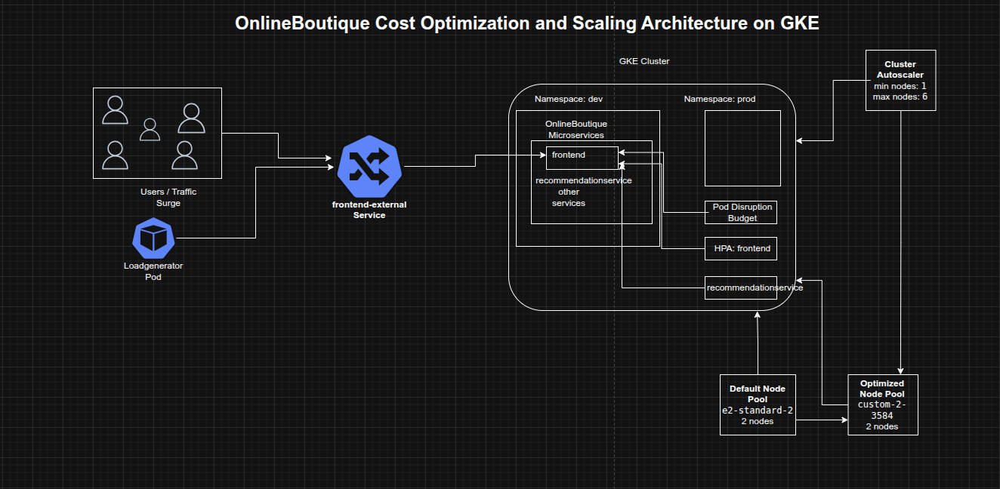

Optimizing Cost and Scalability for OnlineBoutique on Google Kubernetes Engine
Optimizing Cost and Scalability for OnlineBoutique on Google Kubernetes Engine
Timeline: December 2025
Role: Cloud Engineer / Site Reliability Engineer
Skills: Google Kubernetes Engine (GKE), Kubernetes Namespaces, Node Pools, Custom Machine Types, Pod Disruption Budgets, Horizontal Pod Autoscaling, Cluster Autoscaler, Rolling Updates, Load Testing, Cost Optimization
Project Summary
This project focused on deploying and optimizing the OnlineBoutique microservices application on Google Kubernetes Engine (GKE) with an emphasis on cost efficiency, scalability, and service availability. The work included provisioning a right-sized GKE cluster, separating resources across development and production namespaces, migrating workloads to a more efficient custom machine type node pool, applying a safe frontend update using a Pod Disruption Budget, and configuring autoscaling to respond automatically to a major traffic surge.
The implementation demonstrated how Kubernetes platform decisions at the cluster, node pool, and workload levels can work together to reduce infrastructure waste while maintaining application resilience during change and growth.
Objectives
- Create a zonal GKE cluster for OnlineBoutique
- Separate environments using Kubernetes namespaces
- Deploy the OnlineBoutique application to the development namespace
- Migrate workloads to a more cost-efficient custom machine type node pool
- Apply a frontend update without downtime
- Configure autoscaling for frontend and backend services
- Enable cluster autoscaling to respond to demand spikes
Architecture Overview
The architecture consisted of:
- A zonal GKE cluster running on the rapid release channel
- Separate
devandprodnamespaces for environment segregation - The OnlineBoutique microservices application deployed into the
devnamespace - An initial default node pool using
e2-standard-2machines - A second optimized node pool using the
custom-2-3584machine type - A frontend Pod Disruption Budget to preserve service availability during updates
- Horizontal Pod Autoscalers for
frontendandrecommendationservice - Cluster Autoscaler configured with node count bounds to expand and shrink infrastructure automatically
- A loadgenerator pod simulating a high-concurrency traffic surge against the frontend service

Implementation & Highlights
1. Cluster Provisioning and Environment Separation
- Created a zonal GKE cluster on the rapid release channel
- Started with a small two-node cluster using
e2-standard-2machines - Created separate namespaces for:
devprod
- Deployed the OnlineBoutique application to the
devnamespace - Established an initial environment layout that balanced simplicity with basic separation of concerns
2. Node Pool Rightsizing for Cost Optimization
- Reviewed the resource shape of the deployed workloads
- Identified that the current nodes had excess RAM and that smaller resource increments would likely fit workload growth more efficiently
- Created a new node pool using the
custom-2-3584machine type - Configured the new pool with two nodes
- Cordoned and drained the default pool to migrate the application safely
- Deleted the default node pool after workloads had moved successfully
- Demonstrated practical node pool optimization by aligning machine shape more closely with application requirements
3. Frontend Update with Availability Protection
- Created a Pod Disruption Budget named
onlineboutique-frontend-pdb - Configured the frontend deployment with
minAvailable: 1 - Updated the frontend image to:
gcr.io/qwiklabs-resources/onlineboutique-frontend:v2.1
- Changed
imagePullPolicytoAlways - Applied the update while preserving service availability
- Demonstrated safer release management for a customer-facing microservice
4. Frontend Autoscaling for Traffic Growth
- Applied Horizontal Pod Autoscaling to the
frontenddeployment - Used:
- target CPU utilization of 50%
- minimum replicas of 1
- defined maximum replica count
- Designed the autoscaling threshold to leave sufficient CPU headroom while pods scaled
- Improved the application’s ability to absorb a marketing-driven traffic surge without relying entirely on manual intervention
5. Cluster Autoscaling for Infrastructure Elasticity
- Configured cluster autoscaling with:
- minimum nodes: 1
- maximum nodes: 6
- Enabled the cluster to add nodes automatically under scheduling pressure and shrink during lower demand
- Extended optimization beyond pod count to include infrastructure elasticity, helping reduce the cost of overprovisioned capacity
6. Traffic Surge Simulation and Bottleneck Identification
- Ran a high-concurrency load test from the
loadgeneratorpod against the external frontend service - Simulated approximately 8,000 concurrent users
- Observed how the cluster responded to the surge in the GKE Workloads view
- Identified
recommendationserviceas a stressed component under the increased demand - Used load testing as an operational validation step rather than assuming the original scaling profile was sufficient
7. Backend Service Autoscaling
- Applied Horizontal Pod Autoscaling to the
recommendationservice - Configured scaling with:
- target CPU utilization of 50%
- minimum replicas of 1
- maximum replicas of 5
- Reduced the likelihood that a single downstream service would become a bottleneck during peak traffic
- Demonstrated that cost optimization must include both the entry-point service and its dependent backend services
Design Decisions
- Used separate namespaces for
devandprodto introduce lightweight environment separation from the start - Started with a small initial cluster to keep baseline costs low
- Migrated to a custom machine type after observing workload characteristics instead of blindly retaining the default node shape
- Used a Pod Disruption Budget on the frontend to reduce the risk of downtime during update and maintenance actions
- Combined HPA and Cluster Autoscaler so both pod count and infrastructure size could respond to demand
- Used load testing to reveal actual weak points in the application path before making scaling decisions
Results & Impact
- Successfully deployed OnlineBoutique to GKE with namespace-based environment separation
- Reduced infrastructure waste by moving to a more efficient custom machine type node pool
- Performed a frontend update with better availability protection
- Enabled workload-level and cluster-level autoscaling
- Identified and mitigated backend bottlenecks exposed by a large traffic simulation
- Built a practical example of cost-aware Kubernetes operations for a microservices workload
Tools & Technologies Used
- Google Kubernetes Engine (GKE) – Cluster platform
- Kubernetes Namespaces – Environment separation
- Node Pools – Infrastructure shaping
- Custom Machine Types – Cost optimization
- Pod Disruption Budgets (PDBs) – Update safety and availability
- Horizontal Pod Autoscaler (HPA) – Workload scaling
- Cluster Autoscaler – Node count scaling
- Loadgenerator / Locust-style traffic simulation – Demand testing
Outcome
This project demonstrates the ability to optimize a microservices application on GKE for both cost and scalability by combining right-sized infrastructure, safer rollout practices, and demand-driven autoscaling. It highlights practical skills in Kubernetes platform operations, workload tuning, traffic-based scaling, and reliability-aware cost optimization, which are highly relevant to cloud engineering, platform engineering, and site reliability roles.